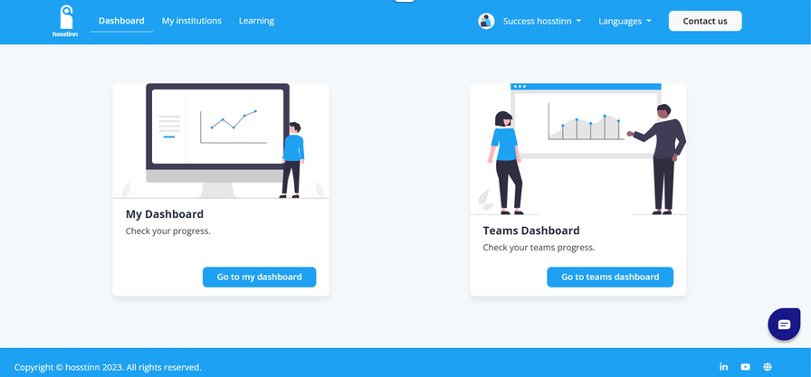
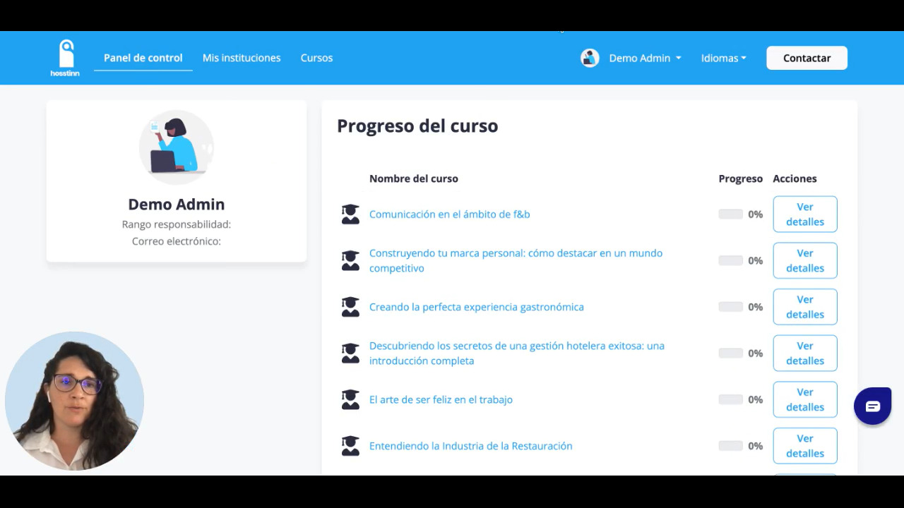
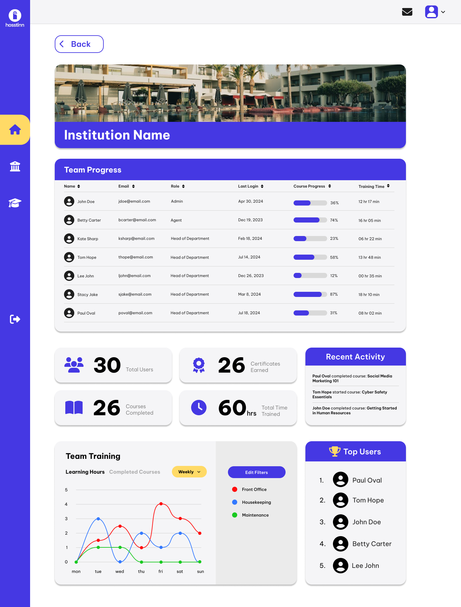
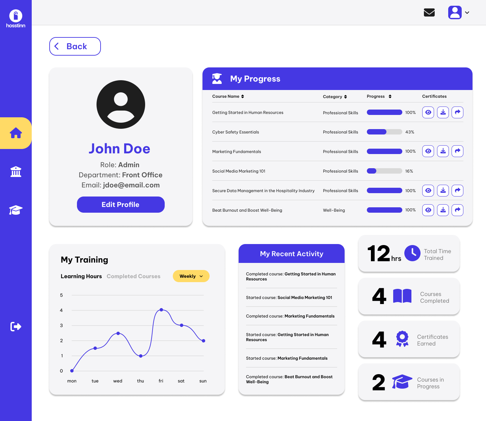

Hosstinn
OverviewResumen
Hosstinn is an AI SaaS platform I co-founded and ran as CEO and CPO. It is the origin of everything I now do for other founders: the strategy, the operating system, and the discipline all come from building this company.
Hosstinn es una plataforma SaaS con IA que cofundé y dirigí como CEO y CPO. Es el origen de todo lo que ahora hago para otros fundadores: la estrategia, el sistema operativo y la disciplina nacen de construir esta empresa.
The challengeEl reto
Start from zero. No product, no team, no process, and a market that needed convincing. Every problem an early-stage founder faces, I faced as the person accountable for the outcome.
Empezar de cero. Sin producto, sin equipo, sin procesos y con un mercado al que había que convencer. Cada problema que enfrenta un fundador early-stage lo enfrenté como la persona responsable del resultado.
My roleMi rol
- Defined the product strategy and owned the roadmap end to end
- Led technical execution from concept to a stable platform in production
- Built the operating rhythm: sprints, documentation, decision log, KPIs
- Drove positioning, pricing, and the activation funnel
- Definí la estrategia de producto y llevé el roadmap de principio a fin
- Lideré la ejecución técnica desde el concepto hasta una plataforma estable en producción
- Construí el ritmo operativo: sprints, documentación, registro de decisiones, KPIs
- Impulsé el posicionamiento, los precios y el funnel de activación
The processEl proceso
Validate before building. Scope the MVP to the riskiest assumption. Ship in small increments on a weekly cadence. Measure activation and retention before chasing growth. Write every meaningful decision down the day it is made. None of this was theory; it was survival, and it worked.
Validar antes de construir. Acotar el MVP a la hipótesis más arriesgada. Entregar en incrementos pequeños con cadencia semanal. Medir activación y retención antes de perseguir crecimiento. Escribir cada decisión relevante el mismo día. Nada de esto era teoría; era supervivencia, y funcionó.
The outcomeEl resultado
A live platform with an engaged user base, recognized by the industry, funded to keep growing, and run by a system rather than by heroics.
Una plataforma en producción con una base de usuarios comprometida, reconocida por el sector, financiada para seguir creciendo y gestionada por un sistema, no por heroicidades.

BeforeAntes
BeforeAntes
AfterDespués
AfterDespués